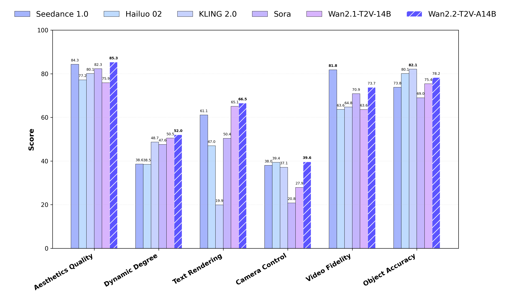

Wan2.2 本地部署避坑指南：从 OOM 到 FlashAttention 编译失败，我踩过的八个坑
Wan2.2 是目前开源领域效果最好的视频生成模型之一，但本地部署远没有 README 看起来那么顺利。本文整理了从显存溢出、分辨率配置到 FlashAttention 安装的八个常见翻车点，每个都给出现象、原因和解决方案。
第一次在 4090 上尝试跑 Wan2.2 的时候，我以为跟着 README 敲命令就能出片——毕竟官网宣传里 TI2V-5B 是"消费级显卡友好"的典范。结果从下午折腾到半夜，控制台里反复跳出 OOM、nvcc not found、CUDA version mismatch 这些错误，一度以为显卡要报废。
后来才发现，Wan2.2 的坑大多不是"模型本身有问题"，而是官方文档默认你已经踩过同类模型的所有前置知识、或者你手里正好有一张 A100。如果你只有一张 24GB 的 4090、装的是 Windows、CUDA 版本还是跟着 PyTorch 默认装的，那你大概率会遇到下面这些问题。
坑一：分辨率为什么一定要是 32 的倍数？720P 不是标准分辨率吗
症状：你兴冲冲地把 --size 1280*720 敲进命令行，控制台直接报错退出，或者跑出来的视频边缘有奇怪的黑条/拉伸。
原因：Wan2.2 系列的 VAE（变分自编码器）压缩比是 4×32×32——这意味着输入图像在时间、宽度、高度三个维度上都被 32 整除后再压缩。720 不能被 32 整除（720 ÷ 32 = 22.5），所以模型没法正确处理。官方文档里写了 1280*704 和 704*1280 是 TI2V-5B 的推荐分辨率，但没解释为什么，很容易让人以为是个"随便选个接近 720P 就行"的建议。
解法：直接用 1280*704 或 704*1280（横屏和竖屏）。如果你觉得 704 和 720 的差距太明显，记住一句话——Wan2.2 的世界里，"标准"是被 VAE 压缩率定义的，不是被影视行业定义的。

坑二：24GB 显存跑 TI2V-5B 直接 OOM，说好的"消费级显卡友好"呢
症状：你执行了官方示例命令，控制台在加载完模型权重后突然崩掉，报 OutOfMemoryError: CUDA out of memory，提示需要约 30GB 显存。
原因：官方 README 里的示例命令假设模型可以完整放进显存——那是 A100 80GB 的配置。消费级 24GB 显卡需要额外加三个参数：--offload_model True、--convert_model_dtype 和 --t5_cpu。其中 --t5_cpu 是关键——把 T5 文本编码器搬到 CPU 上跑，能瞬间释放十几个 GB 的显存。少一个都可能 OOM。
我第一次跑的时候，因为嫌命令太长懒得全部复制粘贴，只加了 --offload_model True，结果反反复复报 OOM 半小时才意识到少了 --t5_cpu 这个最关键的参数。
解法：把下面四个参数当成不可拆分的组合拳：
--offload_model True：模型分片，一部分常驻 GPU，一部分临时卸载--convert_model_dtype：强制 bfloat16，比默认 float32 省一半--t5_cpu：T5 编码器放 CPU，这是 24GB 能跑起来的前提--size 1280*704：分辨率控制在 VAE 友好的范围
如果你的显卡连 24GB 都不到（比如 16GB 的 4060 Ti），那就必须降到 480P（854*480），社区还有 FP8 量化的权重版本可以进一步省显存，但量化会有轻微的质量损失。
坑三：FlashAttention 编译失败，Windows 上从源码编译根本装不上
症状：你跟着文档敲 pip install flash-attn --no-build-isolation，然后就是一长串红色的编译错误，从 nvcc not found 到 MSVC version mismatch，五花八门。
原因：FlashAttention 是 Wan2.2 的性能加速器——不装也能跑，但显存占用会从 22GB 涨到 30GB+，速度还慢 1.5 到 2 倍。问题是 FlashAttention 要求的编译环境极其苛刻：PyTorch ≥ 2.4.0、CUDA Toolkit 版本必须和 PyTorch 完全匹配、Python 3.10~3.12、NVIDIA 驱动也要跟上。Windows 上还要额外装 Visual Studio C++ Build Tools，而且版本不能太旧。
解法：分三步走。第一，确认你的 PyTorch 版本和 CUDA 版本——用 python -c "import torch; print(torch.__version__, torch.version.cuda)" 看。第二，Linux 用户老老实实 pip install flash-attn --no-build-isolation，记得放在所有依赖都装完之后最后再装，避免编译时找不到头文件。第三，Windows 用户别从源码编译了，直接去 FlashAttention 的 GitHub Releases 下载和你的 PyTorch+CUDA 完全匹配的预编译 wheel 文件，然后 pip install 文件名.whl 就行。
实在装不上也能跑——就是别指望 24GB 的 4090 在 720P 下流畅出片，FlashAttention 装不上的时候 720P 可能直接 OOM，你就只能降 480P 或者用 FP8 量化了。
坑四：Prompt 扩展报 DashScope API Key 错误，环境变量明明设了
症状：你设置了 DASH_API_KEY 环境变量，加上了 --use_prompt_extend --prompt_extend_method dashscope 参数，但运行时报 API key not found 或者认证失败。
原因：两个常见情况。一是你用的是阿里云国际站的账号，这时还要额外设置 DASH_API_URL=https://dashscope-intl.aliyuncs.com/api/v1——不设这个，SDK 会默认走国内 endpoint，国际站的 Key 在那认证不了。二是 Windows 上用 set DASH_API_KEY=xxx 设的环境变量只在当前命令行窗口有效，关掉窗口重新打开就没了，你需要用系统属性里的"环境变量"界面去设用户级的永久变量，或者用 PowerShell 的 $env:DASH_API_KEY="xxx"（同样只当前会话有效）。
解法：先确认你的阿里云账号是国内站还是国际站，国际站记得加 DASH_API_URL。然后在同一个终端窗口里先 echo %DASH_API_KEY%（cmd）或 echo $env:DASH_API_KEY（PowerShell）确认变量真的存在，再跑推理命令。如果想一劳永逸，去 Windows 系统设置里加永久环境变量。
坑五：以为 A14B 系列也能在 4090 上跑，白下载了 270 亿参数的模型
症状：你满怀期待地从下载获取了 Wan2.2-T2V-A14B 或 A14B 的 LoRA，兴冲冲地用 4090 跑起来，结果要么直接报显存不足，要么就算勉强装上 --offload_model True 也卡得一动不了。
原因：A14B 是 MoE（混合专家）架构，虽然名字里写着"14B"，但激活参数量实际上是 270 亿级别。它需要 80GB 显存的 A100/H100，还需要多卡 FSDP 并行（torchrun --nproc_per_node=8）。这个需求在 README 的"硬件要求"里写得很清楚，但很多人会被 TI2V-5B 的"消费级显卡友好"宣传带偏，以为 Wan2.2 全家桶都能在 4090 上跑。
解法：消费级显卡（24GB 及以下）只能跑 TI2V-5B 系列。A14B 系列不用想了，要么走百炼云端 API，要么攒机上 A100/H100。
坑六：S2V-14B 语音驱动模型也以为能在本地跑
症状：你对 S2V 语音驱动对口型很感兴趣，下载了模型权重，结果发现和 A14B 一样报显存不足。
原因：S2V-14B 需要整整 80GB 显存，和 A14B 是一个级别的硬件门槛。后来去Wan2.2文档翻了一下，官方专门给它写了"显存门槛"一节，但很多人跳过了直接下载。
解法：S2V-14B 只有云端一条路——百炼的 DashScope API 已经封装好了 S2V 的 animate 接口，你只需要准备好人像照片、音频文件和可选的姿态参考视频，调用 API 就能出对口型视频。本地想跑？没有 A100/H100 就别想了。
坑七：Prompt 扩展以为可有可无，出片效果差距巨大
症状：你没开 prompt 扩展，原始 prompt 写了"两只猫在打架"，跑出来的视频猫的动作很生硬、场景细节很少，和网上别人晒的效果差很多。
原因：Wan2.2 官方强烈建议开启 prompt 扩展，但文档里没说清楚"不开到底会差多少"。扩展不仅仅是"帮你把短句变成长句"——它会自动补充镜头语言（特写还是远景？）、光照条件（聚光灯还是自然光？）、动作细节（毛发飞散还是手套碰撞？）。这些补充的信息直接决定了模型生成画面的丰富度和连贯性。不开扩展的话，模型只能猜你想要什么。
解法：默认开启。DashScope 云端 API 方式最简单，设好环境变量加两个参数就行；不想用云端的话可以下载本地 Qwen 系列模型做扩展，但会额外占显存。扩展模型的选择也有讲究——文本生视频用 Qwen2.5-14B-Instruct（效果最好但占显存），图文生视频用 Qwen2.5-VL-7B-Instruct。百炼有免费额度，超出后按量计费，对于个人玩家来说完全够用。
坑八：以为 FlashAttention 版本随便装，Hopper 架构装了 FA2 白折腾
症状：你有 H100，装了 FlashAttention 2 以为能用，结果推理速度和不装差不多，也没省显存。
原因：FlashAttention 有三个版本，分别对应不同的 GPU 架构。H100（Hopper）应该用 FlashAttention 3，A100/4090/3090（Ampere）用 FlashAttention 2，再老的架构才考虑 FA1。版本不对的话，要么编译时不报错但运行时不走优化路径，要么直接性能不提升。官方文档里有一张版本对应表，但藏得比较深。
解法：查表选版本。Hopper → FA3，Ampere → FA2，其他 → FA1（不推荐）。H100 用 FA3 相比 FA2 在长序列推理上有明显的速度提升和显存节省，值得专门装一下。

防坑清单速查
整理了几个最容易被忽略但一踩就半天出不来的点：
- 参数组合拳不能拆：24GB 显卡跑 TI2V-5B 必须
--offload_model True+--convert_model_dtype+--t5_cpu三个一起上，少一个都可能 OOM - 分辨率记 704 不记 720：Wan2.2 的 VAE 压缩比决定了高宽必须是 32 的倍数，704 才是正确的"720P"
- FlashAttention 装不上先查架构：Hopper 要 FA3，Ampere 要 FA2，装错版本等于没装
- A14B 和 S2V-14B 没有本地 24GB 方案：直接上云端，别浪费下载时间
- Prompt 扩展默认开启：不开扩展出片质量会差一个档次，DashScope 有免费额度
知道这些坑之后，Wan2.2 其实相当省心——只要硬件对上、参数没漏、FlashAttention 装对版本，出片效果确实对得起"开源最强"的名头。开源项目的代码在GitHub有完整仓库，国内用户也能在Gitee和GitCode上找到对应的镜像副本。